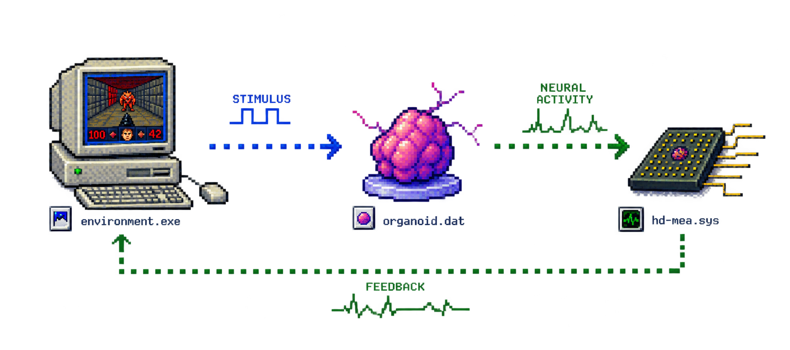

CAN A LAB-MADE
BRAIN COMPUTE?
What happens when we stop trying to make machines imitate biological intelligence and instead build computational systems around living neural tissue?
Hi, I'm Any Rodrigues, a molecular bioengineer interested in the interface between living neural systems and technology.
My background is in neural electrophysiology and HD-MEA.
During my Master's research, I worked with adult zebrafish retina, recording and analysing neural activity using HD-MEA.
Working directly with living neural tissue made me increasingly interested in a different question: not only how biological systems work, but how they process information and potentially learn from it.
> thinking about: at what point does science fiction become experimental biology?
> status: looking for the lab where the next chapter begins...
> _
University of Porto
MEA electrophysiology
DZNE
HD-MEA electrophysiology
TU Dresden / CRTD
living neural systems + computation
( o.o )
> ^ <
thanks for stopping by!
on a computer
HTML
19.08.2026